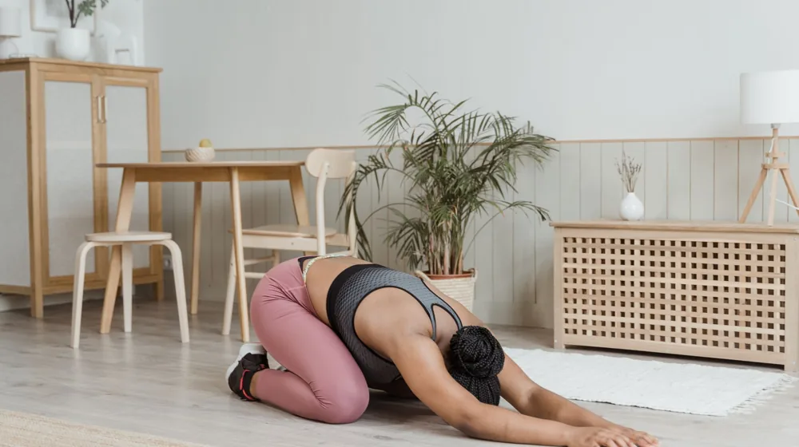

홈트레이닝 초보 가이드: 이 3가지부터 시작하면 실패 없습니다
사진: ROMAN ODINTSOV / Pexels (무료 이미지, 출처 표기)
홈트레이닝, 막막한 초보자를 위한 현실적인 시작법

홈트레이닝을 시작하고 싶지만 어디서부터 해야 할지 막막하신가요? 거창한 장비나 전문 지식 없이도 집에서 꾸준히 운동할 수 있는 현실적인 방법을 찾고 있다면 이 가이드가 도움이 될 것입니다. 초보자들이 가장 많이 겪는 어려움을 해결하고, 성공적인 홈트 습관을 만드는 핵심 3단계를 알려드립니다.
홈트레이닝 시작 전, 이것부터 확인하세요 (필수 준비물 체크리스트)
홈트레이닝을 시작할 때 가장 먼저 할 일은 운동할 공간을 확보하고 기본적인 준비물을 갖추는 것입니다. 불필요한 장비 구매에 앞서, 필수적인 몇 가지를 먼저 확인해 보세요.
- 운동 공간 확보: 최소한 몸을 뻗거나 스트레칭할 수 있는 1.5m x 1.5m 정도의 공간이 필요합니다. 바닥이 미끄럽지 않고 주변에 부딪힐 만한 물건이 없는지 확인하세요.
- 편안한 운동복: 움직임에 제한이 없고 땀 흡수가 잘 되는 옷이 좋습니다. 비싼 기능성 의류보다는 편안함이 우선입니다.
- 요가 매트 또는 쿠션: 무릎, 손목 등 관절을 보호하고 미끄럼을 방지하는 데 필수적입니다. 바닥과 직접 닿는 충격을 줄여줍니다.
- 물통: 운동 중 수분 섭취는 매우 중요합니다. 손이 닿는 곳에 물을 준비해두세요.
이 외에 운동 강도를 높이고 싶다면 저중량 덤벨, 세라밴드(운동용 고무 밴드) 등을 추가로 고려할 수 있습니다. 하지만 처음에는 위 필수품만으로도 충분합니다.
초보자를 위한 실패 없는 운동 계획 세우기
성공적인 홈트레이닝은 현실적인 목표 설정과 꾸준한 계획에서 시작됩니다. 무리한 목표는 쉽게 포기로 이어질 수 있으니, 자신에게 맞는 계획을 세우는 것이 중요합니다.
1. 현실적인 운동 목표 설정
단기간에 큰 변화를 기대하기보다는, ‘주 3회, 30분 운동’처럼 실현 가능한 목표를 세우는 것이 좋습니다. 체력 증진, 스트레스 해소, 활력 증진 등 구체적인 목표가 있다면 동기 부여에 더 도움이 됩니다.
2. 초보자 맞춤 운동 루틴 선택
다양한 홈트레이닝 앱이나 유튜브 채널에서 초보자용 프로그램을 찾아볼 수 있습니다. 유산소(가볍게 뛰기, 점핑잭), 근력(스쿼트, 런지, 푸쉬업), 유연성(스트레칭) 운동을 균형 있게 조합하는 것이 효과적입니다. 처음에는 각 운동당 10~15회 반복, 2~3세트 정도로 시작하고, 점차 횟수와 세트를 늘려나가세요.
3. 운동 시간과 휴식 배치
매주 운동할 요일과 시간을 정해두면 꾸준히 실천하는 데 큰 도움이 됩니다. 예를 들어, 월/수/금 저녁 8시처럼 규칙적인 루틴을 만드세요. 운동만큼 휴식도 중요하므로, 최소 주 2회는 온전히 쉬는 날을 가지는 것이 좋습니다.
홈트 초보자가 가장 흔히 놓치는 주의사항 3가지
의욕이 앞서 흔히 저지르기 쉬운 실수들을 미리 알고 피한다면 부상 없이 즐겁게 홈트레이닝을 이어갈 수 있습니다.
1. 무리한 시작과 급격한 강도 증가 금지
몸이 적응할 시간을 주지 않고 처음부터 과도하게 운동하면 근육통과 부상으로 이어질 수 있습니다. 운동 시간과 강도는 서서히, 점진적으로 늘려나가야 합니다. 우리 몸은 꾸준한 자극에 반응합니다.
2. 올바른 자세의 중요성
집에서 혼자 운동할 때는 자세가 흐트러지기 쉽습니다. 거울을 보거나 자신의 운동 모습을 촬영하여 자세를 확인하고 교정하는 것이 좋습니다. 유튜브 등 전문 채널의 정확한 자세 가이드를 참고하며 따라 하는 것이 중요합니다. 잘못된 자세는 부상의 원인이 되며 운동 효과를 떨어뜨립니다.
3. 휴식과 영양의 균형
운동 후 근육 회복을 위한 충분한 휴식과 균형 잡힌 영양 섭취는 운동의 일부입니다. 단백질 위주의 식단과 충분한 수면은 운동 효과를 극대화하고 몸의 피로를 회복하는 데 필수적입니다.
자주 묻는 질문: 홈트, 얼마나 해야 효과 볼 수 있나요?
많은 분들이 홈트레이닝을 시작하며 '언제쯤 효과를 볼 수 있을까?'라는 질문을 하십니다. 효과는 개인의 목표, 운동 강도, 식단, 꾸준함에 따라 달라지지만, 일반적인 가이드라인은 존재합니다.
대부분의 전문가들은 건강 증진을 위해 주 150분 이상의 중강도 유산소 운동과 주 2회 이상의 근력 운동을 권장합니다. 이는 2026년 08월 기준, 세계보건기구(WHO)의 신체활동 권장 사항과도 일치하는 내용입니다.
홈트레이닝의 효과는 단기간보다는 꾸준함에서 나타납니다. 보통 4~6주 정도 꾸준히 운동하면 체력 향상을 느끼기 시작하고, 2~3개월이 지나면 신체적인 변화를 경험할 수 있습니다. 중요한 것은 매일 조금씩이라도 꾸준히 하는 습관을 들이는 것입니다. 개인의 건강 상태에 따라 운동 방법이나 강도는 조절될 수 있으니, 특정 질환이 있거나 건강상 염려되는 부분이 있다면 의사나 전문가와 상담 후 운동 계획을 세우는 것이 좋습니다.
홈트레이닝, 꾸준함이 성공의 핵심입니다
홈트레이닝은 피트니스 센터에 갈 필요 없이 언제든 운동할 수 있다는 큰 장점이 있습니다. 처음에는 힘들고 귀찮을 수 있지만, 작은 목표를 세우고 하나씩 달성하며 성취감을 느껴보세요. 운동 일지를 작성하거나, 친구와 함께 챌린지를 하는 것도 좋은 동기 부여 방법입니다. 꾸준함이 결국 원하는 결과를 가져올 것입니다.
🔗 이 글도 함께 보면 좋아요: 홈트레이닝 성공 가이드: 집에서 건강을 만드는 가장 현명한 방법
관련 추천 상품
요가매트, 홈트 밴드, 저중량 덤벨 관련 인기 상품 보러가기
이 포스팅은 쿠팡 파트너스 활동의 일환으로, 이에 따른 일정액의 수수료를 제공받습니다.